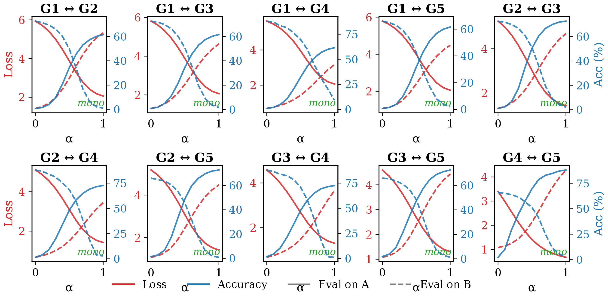
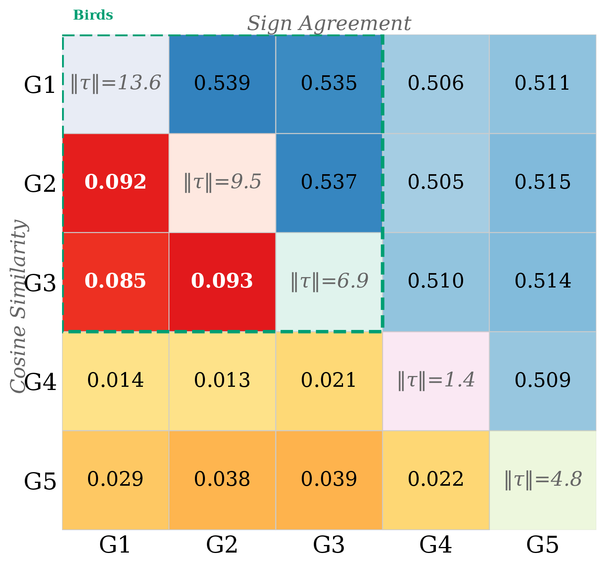
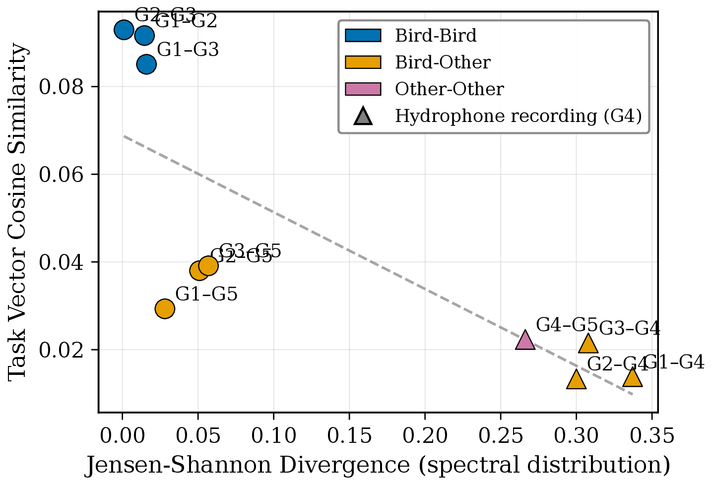
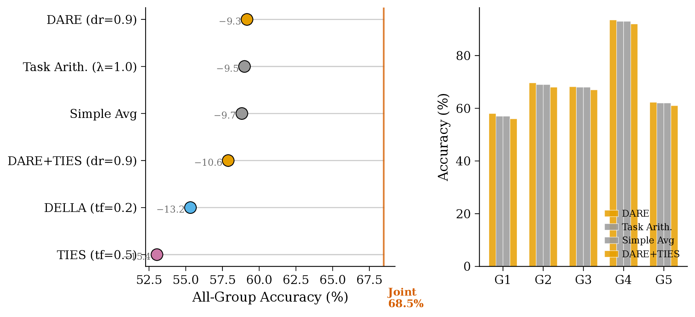
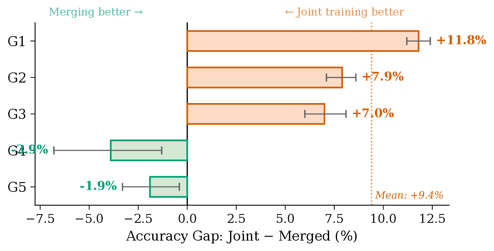
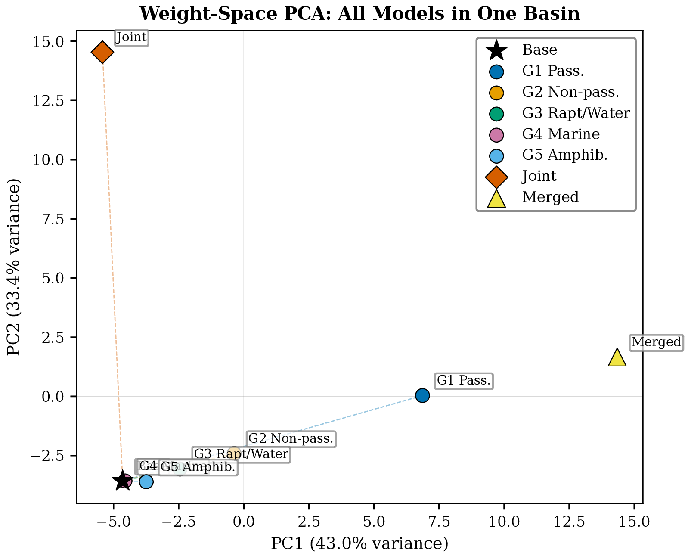
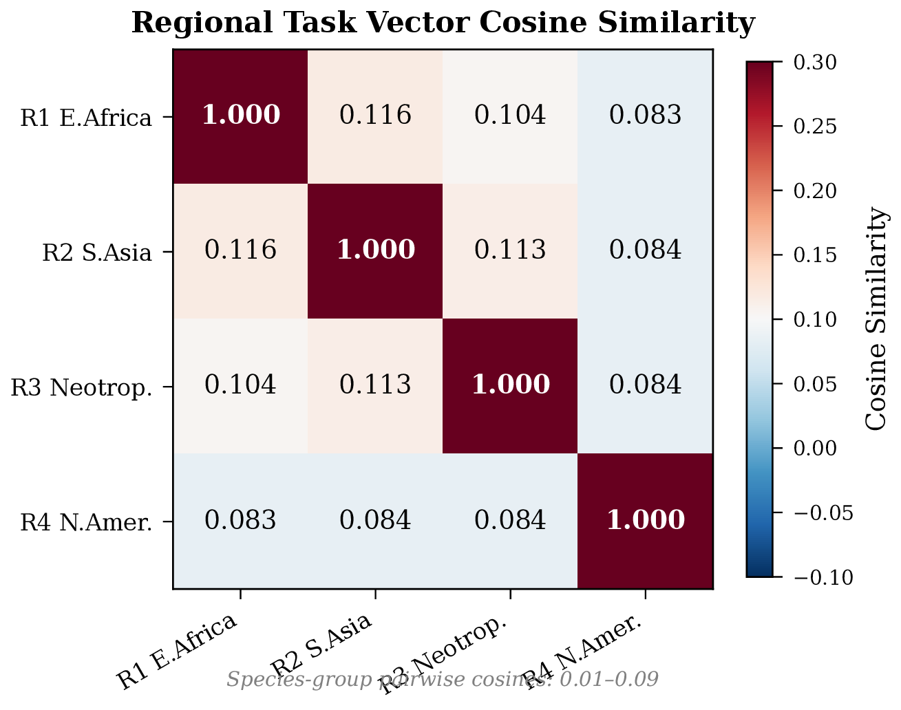
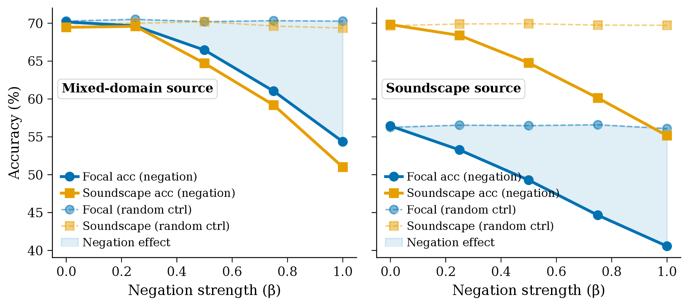
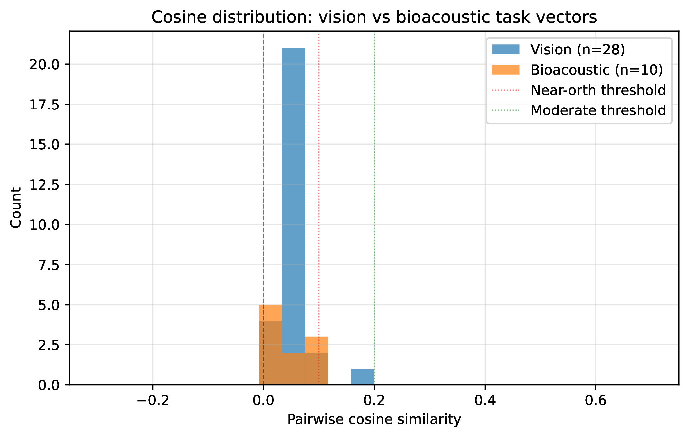

1 Systems and Control Engineering, Institute of Science Tokyo, Japan · 2 RIKEN BDR, Japan
The idea in one picture
(a) Taxonomic groups concentrate vocal energy in non-overlapping frequency bands. (b) Classifying them modifies largely disjoint parameter subsets, so their task vectors are near-orthogonal (magnitude ∝ dataset size). (c) Averaging the vectors and adding them to the shared pretrained encoder yields a multi-taxa classifier — no joint training, no shared data.
Training data for bioacoustics is scattered across taxa, regions, and institutions. Centralizing it all is often infeasible. We show that independently fine-tuned BEATs encoders can be composed into a unified 661-species classifier via task vector arithmetic without sharing data. We find that bioacoustic task vectors are near-orthogonal (cosine 0.01±0.09). Their separation aligns closely with spectral distribution distance, a gradient consistent with the acoustic niche hypothesis. This geometry makes simple averaging optimal while sign-conflict methods reduce accuracy by one to six percentage points. Composition also creates an asymmetric gap: species-rich groups lose accuracy relative to joint training while underrepresented taxa gain, a redistribution useful for equitable biodiversity monitoring. We verify linear mode connectivity across all taxonomic pairs, demonstrate zero-shot transfer to new regions, and identify domain negation as a boundary condition where composition fails. These results enable a collaborative paradigm for bioacoustics where institutions share only task vectors to assemble multi-taxa classifiers, preserving data privacy.
Contributions
Five independently fine-tuned species-group models compose into a 661-species classifier at 59.2% accuracy — 86% of a jointly-trained baseline — and regional models reach 91% of dedicated performance.
Task vectors are near-orthogonal (cosine 0.01 ± 0.09), rising from cross-taxa (0.01) to intra-avian (0.08) to regional (0.08) pairs. This gradient correlates strongly with spectral distribution distance — the acoustic niche hypothesis, in weights.
Merging redistributes capacity from majority to minority taxa: passerines −11.8% while marine mammals +3.9% and amphibians +1.9% — useful for equitable biodiversity monitoring.
Animated explainers
Task arithmetic in weight space. A trained model is a point; each specialist is a near-orthogonal arrow (cosine 0.01–0.09). Because the arrows barely overlap, averaging them onto θ₀ preserves every specialist's knowledge.
The asymmetric gap. Relative to joint training, species-rich majority taxa lose accuracy while under-represented taxa gain — a redistribution useful for equitable monitoring.
Method
From a shared pretrained encoder θ₀ and a model fine-tuned on group i, the task vector τᵢ = θᵢ − θ₀ captures what was learned (encoder weights only — classification heads are discarded). The simplest composition averages them:
θmerged = θ₀ + (1/N) Σi τi
Because the task vectors are pairwise near-orthogonal, no directional interference occurs — performance loss depends only on vector magnitudes, and the dominant term scales with ‖τᵢ‖². Groups trained on larger datasets therefore experience greater dilution, which is exactly why the composition gap is asymmetric. The same orthogonality drives sign agreement toward 0.5, so TIES-style majority voting becomes random.
Experiments & results
Every fine-tuned pair is connected by a monotonic, zero-barrier interpolation path — the specialists live in a shared loss basin, a prerequisite for merging to work.


Near-orthogonal task vectors. Cosine similarities (lower triangle) are 0.01–0.09; sign agreement (upper triangle) hovers near 0.51 — near-random, which is why TIES discards ~half of each vector.

Ecology predicts geometry. Pairwise cosine similarity falls as spectral distribution divergence grows — bird–bird pairs cluster high-similarity, hydrophone-recorded marine mammals sit farthest.

Species-group composition. Direct averaging matches or beats every conflict-resolution method; the unified probe spans all 661 species.

The asymmetric gap. Species-rich passerines lose accuracy relative to joint training, while data-poor marine mammals and amphibians gain.

Weight-space structure. The first two principal components of the task vectors capture 76.4% of variance and separate taxa.

Experiment 3 · Regional composition. Merging geographically specialized models transfers to novel regions, reaching 91% of dedicated per-region performance.
Experiment 4 · A boundary condition

Task arithmetic also allows subtraction. We tried removing a “focal-recording” task vector to improve soundscape performance: θnew = θsource − β·τfocal. It fails — both focal and soundscape accuracy degrade monotonically. The focal recording is not a separable style but a canonical representation of species identity, so subtracting it erases core information. A matched random-vector control moves accuracy by only ±0.6%, confirming the degradation is direction-specific. Negation works only when the attribute is truly disentangled from identity in weight space.
Context

Acoustic niche partitioning pushes bioacoustic task vectors into a far more orthogonal regime than is typical elsewhere. This is what makes simple averaging the right tool here and conflict-resolution methods counterproductive — and it suggests composition quality can be assessed a priori from acoustic properties alone, before any merging is attempted.
As monitoring expands to diverse taxa and under-surveyed regions, task-vector arithmetic offers the bioacoustics community a path toward shared multi-taxa classifiers: contribute learned knowledge as a lightweight task vector as ecological coverage grows — without centralizing data or retraining.
@inproceedings{nihal2026ecological,
title = {Ecologically-Constrained Task Arithmetic for Multi-Taxa
Bioacoustic Classifiers Without Shared Data},
author = {Nihal, Ragib Amin and Yen, Benjamin and Shi, Runwu and
Ashizawa, Takeshi and Nakadai, Kazuhiro},
booktitle = {Proc. INTERSPEECH 2026},
year = {2026},
address = {Sydney, Australia}
}